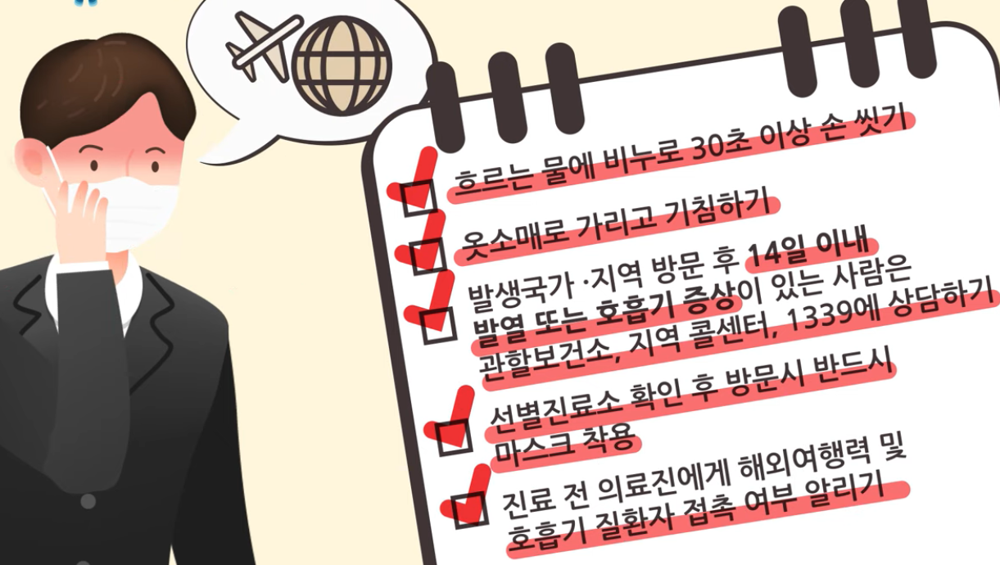
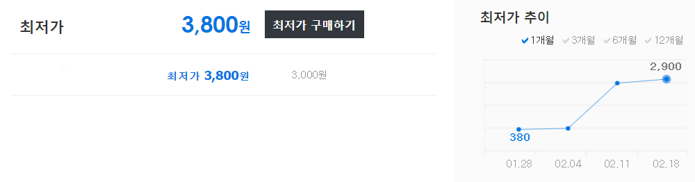
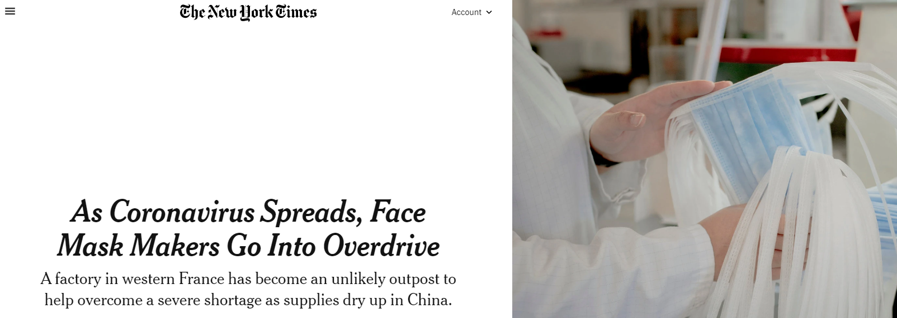
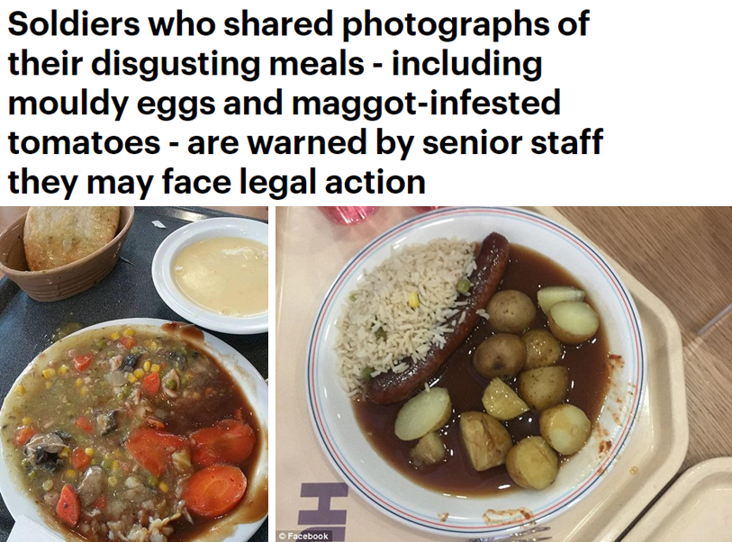

마스크와 '보이지 않는 손'
게시: 2020-02-26T06:30:38+09:00
코로나19 때문에 요즘 마스크 대란입니다. 저는 개인적으로 아직 마스크는 착용하고 있지 않습니다만, 손은 과다하게 자주 씻는 편입니다. 저는 마스크보다는 손 자주 씻는 것이 더 중요하다고 봅니다. 기침하는 환자 근처에 제가 있다가 직접적으로 바이러스가 섞인 침방울이 제 코로 들어올 확률보다는 아직 죽지 않은 바이러스가 묻은 무언가를 제가 만졌다가 그 손으로 (무의식 중에) 제 콧구멍에 손을 댈 확률이 훨씬 크거든요. 또 물도 일부러 자주 마십니다. 사실 그게 코로나19 예방에 딱히 도움이 되는 건 아니겠으나, 물을 자주 마시면 화장실을 자주 가게 되기 때문에, 결국 손을 자주 씻게 되기 때문입니다. 그보다 더 중요한 것은 사람이 많이 모이는 곳에 가지 않는 것입니다. 그래서 저는 이미 몇 주째 교회 예배에 참석하고 있지 않습니다.

(메르스 백신 개발하신 바이러스 전문가 카톨릭대 남재환 교수님 말씀대로, 현재 국내에서 유일하게 믿을 수 있는 코로나19 전문가는 질병관리본부이고, 그 말을 따르는 것이 가장 확실합니다. 거기서도 마스크를 길거리와 직장 등에서도 항상 착용하라는 말은 하지 않습니다. 그러나 저도 지하철이나 버스 등에서는 착용하려고 합니다. 교회 같은 곳에서는 당연히 착용하는 것이 맞다고 봅니다. 이번 사태 이전에도, 항상 교회 앉은 자리 주변에서 누군가는 콜록거리거든요.)
아직 교회에 나가는 주변 사람들 이야기를 들어보니, 다소 넉넉한 동네의 대형 교회에서는 마스크를 한 신도들의 비율이 한 40% 정도로 꽤 높답니다. 그에 비해 빠듯한 동네의 영세한 교회에서는 요즘도 예배 때 마스크를 하는 신도들이 불과 5~10% 정도로 많지 않다고 합니다. 이 글은 일요일에 미리 써두는 것입니다만, 오늘 저희 교회 예배 유튜브 실시간 중계를 보니 지난 주까지는 마스크 쓰신 분이 그렇게 많지 않았으나 이번 주는 (참석 인원이 많이 줄어들긴 했습니다만) 거의 모든 분이 마스크를 착용하고 예배에 참석하셨더군요. 영세한 교회 신도들이 마스크 착용을 잘 안하는 이유는 그분들의 보건 지식 수준이 낮아서가 아닙니다. 요즘 마스크 구하는 것이 매우 어렵고 또 매우 비쌉니다. 원래 장당 400원 정도이던 KF94 마스크 가격이 최근에는 4천원 정도 하는 모양입니다. 마스크는 하루에 최소 1장 써야 하니까, 1달이면 12만원입니다. 결코 만만한 비용이 아닙니다.

(인터넷 최저가 검색 사이트인 danawa.com 에서 검색한 Kf94 마스크 검색 결과입니다. 다나와에서 협찬 받은 블로그 아닙니다.) 저는 결코 마스크 공장 사장님들이 폭리를 취하는 것이 문제이긴 한데, 그것이 근본적인 문제라고 보지 않습니다. 정부 규제가 없었다면 더 큰 이익을 볼 수 있는 중국으로 마스크가 전량 수출되었을텐데, 정부 규제로 인해 국내 시장에 좀더 낮은 이윤에라도 마스크가 공급되는 것만도 다행이라고 봅니다. 이렇게 마스크 가격이 오른 것은 물론 공급은 제한적인데 수요가 너무 폭발적이기 때문입니다. 우리나라도 난리지만 중국은 말할 것도 없고 일본에서도 마스크를 못 구해 난리라고 합니다. 맞는 이야기인지는 모르겠는데 원래 일본에서는 자국내 마스크 생산량이 거의 없었다고 하네요. 그래서인지 지인의 지인, 그러니까 저는 모르는 분의 사촌이 일본에 사는데, 일본에서는 가격이 높은 건 둘째치고 아예 마스크를 못 구해서 난리이니 한장에 4천원이건 5천원이건 수십장 사서 보내달라는 부탁 전화를 하시더랍니다. 그런데 나중에 들어보니 결국 못 보냈답니다. 개인이 우체국 소포를 통해 마스크를 해외로 보내는 것이 원천적으로 금지되어 있더래요. 역시 정부 규제인 것이지요.
궁금해서 찾아보니 세계 마스크 생산량의 50% 정도는 중국이 차지하는데, 설 연휴 때문에 이미 생산이 줄어든 상태에서 코로나19 사태가 터져서 수요가 폭발적으로 늘었고, 설상가상으로 코로나19로 인해 많은 마스크 공장의 조업이 중단되어 공급은 더욱 줄어든 것이 문제의 원인이라고 합니다. 코로나19 때문에 전세계적으로 경제에 큰 타격이 있겠습니다만, 최소한 마스크 업체는 전혀 그렇지 않은 셈입니다. 인도부터 체코까지, 현재 전세계의 마스크 공장들이 over-drive 모드에 들어갔다고 합니다. 그런 것도 있고, 또 지인의 지인, 그러니까 저는 모르는 분의 카더라 말씀에 따르면 3월부터는 중국 공장들의 조업이 정상화될 것이라서 아마 마스크 가격이 대폭 하락할 가능성이 있답니다. (어디까지나 가능성일 뿐, 마스크 가격과 주가의 향방은 아무도 모릅니다.)

(상세 기사는 https://www.nytimes.com/2020/02/06/business/coronavirus-face-masks.html 에서 읽어보세요.)
이렇게 보면 결국 시장의 보이지 않는 손이 모든 것을 자율적으로 조절해서, 수요와 공급이 결국 균형을 찾아갈 것처럼 보입니다. 그러니까 역시 모든 것을 시장에 맡겨두는 것이 최고일까요 ? 저는 그렇게 보지 않습니다. 마스크는 예방 백신 같은 것이 아니라 결국 다른 환자가 기침 등을 하면서 공기 중에 뱉어낸, 바이러스가 섞인 미세한 침방울이 저의 코로 들어오는 것을 막아주는 방호장비입니다. 따라서 주변에 기침하는 사람이 없으면 사실 마스크를 꼭 할 필요는 없습니다. 미국 질병관리본부 CDC가 '코로나19를 예방하기 위해 마스크를 착용할 필요는 없다'라고 반복적으로 이야기하는 것도 같은 이유에서입니다. 물론 미국과 우리나라는 사정이 다릅니다. 미국에서는 감기에 걸린 직원이 회사에 출근하면 매니저에게 야단을 맞고 집으로 돌려보내지는 모양이지만, 우리나라에서는 감기 쯤이야 꾹 참고 회사에 나와 열심히 일하는 모습을 보여줘야 매니저에게 칭찬받는 분위기잖아요. 아무튼 주변 사람들이 다 건강해보이고 또 건강에 신경을 쓰는 사람들이라면 굳이 마스크를 꼭 할 필요는 없다고 생각합니다. 같은 교회 내에서라도, 직장에 다녀서 소득이 넉넉한 젊은 신도와 국민연금과 기초 연금 밖에 소득이 없는 노년층 신도 중에 어느 쪽에게 마스크가 더 절실하게 필요하다고 생각되십니까 ? 상식적으로 기침을 해도 노인분들이 많이 합니다. 또 중장년이나 청년들은 코로나19에 걸려도 대부분 회복하겠지만 노인분들은 사망 가능성이 높습니다. (지나친 일반화일 수 있습니다만) 살림이 넉넉할 수록 청결과 보건에 신경을 더 많이 쓰고, 살림이 빠듯할 수록 그렇지 못합니다. 어느 모로 봐도 마스크를 더 필요로 하는 분들은 살림이 빠듯한 노년층 신도 쪽입니다. 그러나 정작 마스크를 더 쉽게 구할 수 있는 쪽은 젊고 넉넉한 신도 쪽입니다. 그러니까 모든 것을 시장에 맡겨놓으면 더 절실한 사람들에게 필요한 자원이 가지 못하고, 덜 필요한 사람들에게 자원이 집중되는 것입니다. 그렇다고 마스크를 국가가 일괄적으로 강제 수매하여 배급제로 배포할 수도 없습니다. 그거야 말로 공산주의에서나 하는 짓인데, 제가 알기로는 공산주의 국가 중국에서도 그런 짓은 하지 않습니다. 사람마다 마스크 수요가 다르기 때문입니다. 가령 집 밖으로 거의 나가지 않는 분은 마스크가 필요없습니다. 그에 비해 활발하게 교회 활동을 하시는 분들은 마스크가 훨씬 더 많이 필요합니다. 일괄적으로 두당 몇 장씩 나눠주는 것은 엄청난 비효율입니다. 그렇다고 국가가 교회마다 신도수에 맟춰 무료로 마스크를 배포할 수도 없습니다. 국가권력이 특정 종교에게 보조금을 주는 행태가 될테니까요. 무엇보다 그런 분배 과정에서 얼마나 많은 비리가 발생할 것이며, 또 정부가 강제 수매할 떄 두둑한 이윤을 주지는 않을 것이니 얼마나 많은 마스크 생산업자들이 암거래를 위해 마스크를 뺴돌리겠습니까 ? 그거야말로 대혼란을 자초하는 일입니다. 가장 좋은 것은 교회가 당분간 예배를 온라인으로 드리도록 하는 것입니다. 그런데 카톹릭에서는 특히 대구 대교구에서는 아예 2주간 성당 미사를 포기하는 등 모범적인 모습을 보이는 것에 비해, 개신교 교회는 온라인 예배에 대해서도 매우 소극적인 모습을 보이는 것 같습니다. 저는 이것이 신부님들이 바티칸이라는 국가적 조직 하에서 실적(?)과 무관하게 정해진 (쥐꼬리만한) 월급을 받는 공무원 같은 신분임에 비해, 개신교 교회는 (물론 안 그런 교회도 많습니다만) 교회 재정이 마치 목사님과 장로님들이 경영하는 기업처럼 운영되는 것이 관련이 있지 않나 생각합니다. 온라인 헌금이 많이 정착되었다고는 하지만, 아직은 아무래도 예배에 안나오면 헌금액도 그만큼 줄어드니까요. 그런 것을 보면 민영화가 모든 분야에서 언제나 좋은 결과를 내는 것 같지는 않습니다.

(민영화가 언제나 꼭 좋은 결과를 내지는 않는다는 것은 영국군 급식과 미국 건강보험 및 캘리포니아 전력공급만 그런 것은 아닙니다. 영국군 급식 민영화 관련 기사는 https://www.dailymail.co.uk/news/article-3508005/Soldiers-shared-photographs-disgusting-meals-including-maggot-infested-tomatoes-mouldy-eggs-warned-senior-staff-face-legal-action.html 참조)
저는 모든 것을 시장에 맡겨두는 자유방임이 결코 만병통치약이 아니며, 일정 영역, 특정 시기에는 적절한 정부의 규제가 꼭 필요하다고 믿습니다. 어떤 영역, 어떤 시기에 정부 규제가 어느 정도로 적용되어야 하느냐에 대해서는 저는 모릅니다. 아마 아무도 확실하게는 모를 것입니다. 그러나 정부 규제는 없을 수록 좋으며 무조건 시장의 '보이지 않는 손'이 다 알아서 해줄 거라는 주장은 공산주의만큼이나 해로운 것이라고 저는 믿습니다.